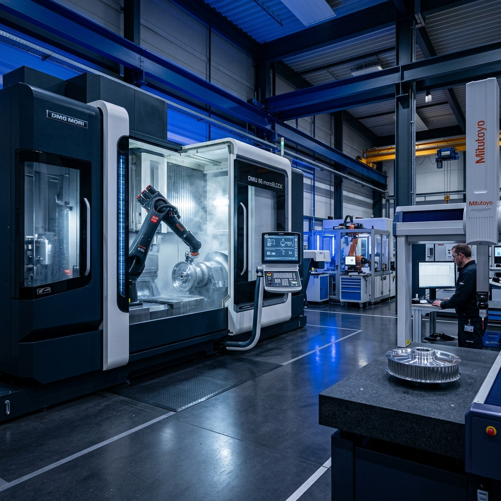

Integrating progressive stamping, flow forming, and multi-axis CNC machining under one roof to deliver volume-scalable, high-precision power transmission solutions.
We handle the complete development lifecycle, transforming raw ideas into finished components.
Collaborative component design using CAD/CAM, optimizing geometries and performing Finite Element Analysis (FEA) to ensure structural integrity and minimum weight.
In-house design and fabrication of progressive dies, spin-forming Mandrels, and custom inspection fixtures to guarantee repeatability.
High-speed, multi-stage stamping presses blanks out component shapes with precise tolerances and high production efficiency.
Advanced CNC spin-forming rollers form micro-V belt grooves directly into the stamped steel shell, replacing thick castings with lightweight rolled parts.
Precision turning and boring operations refine bearing seats, keyways, and mounting holes to strict geometric tolerances (±0.01mm).
Dynamic balancing checks ensure vibration-free operation at high RPM. Integrated robotic welding and bushing assemblies complete the parts.

JBMK is a leader in sheet-metal conversion engineering. Our primary technical capabilities include:
Cold rolling grooves into metal sheets for up to 40% component weight reductions.
Tonnage capacity from 80T up to 630T presses handling various carbon steels.
Equipped with sub-spindles for combined turning and milling of critical hubs.
Verifying rotational runouts to G2.5 balance grades on automated testing rigs.
An overview of the advanced machinery powering our 200,000 sq. ft. campus.
| Equipment Category | Details & Specifications | Units |
|---|---|---|
| Progressive Stamping Presses | Mechanical & Link Motion presses ranging from 80 Tons to 630 Tons (AIDA, Komatsu) | 12 Lines |
| CNC Flow & Spin Forming Machines | Multi-roller spin formers equipped with CNC playback for automatic profiling | 8 Units |
| CNC Turning Centers / Lathes | Doosan & Mazak high-precision lathes with automated loader arms | 24 Units |
| Robotic Assembly & Welding Cells | Robotic MIG/TIG welding and projection welding cells for brackets & damper hubs | 6 Stations |
| Automatic Balancing Machines | Schenck dynamic balancing rigs with micro-correction drilling capabilities | 4 Units |
| Toolroom Machinery | EDM Wire cuts, CNC machining centers, and surface grinders for die fabrication | 1 Workshop |